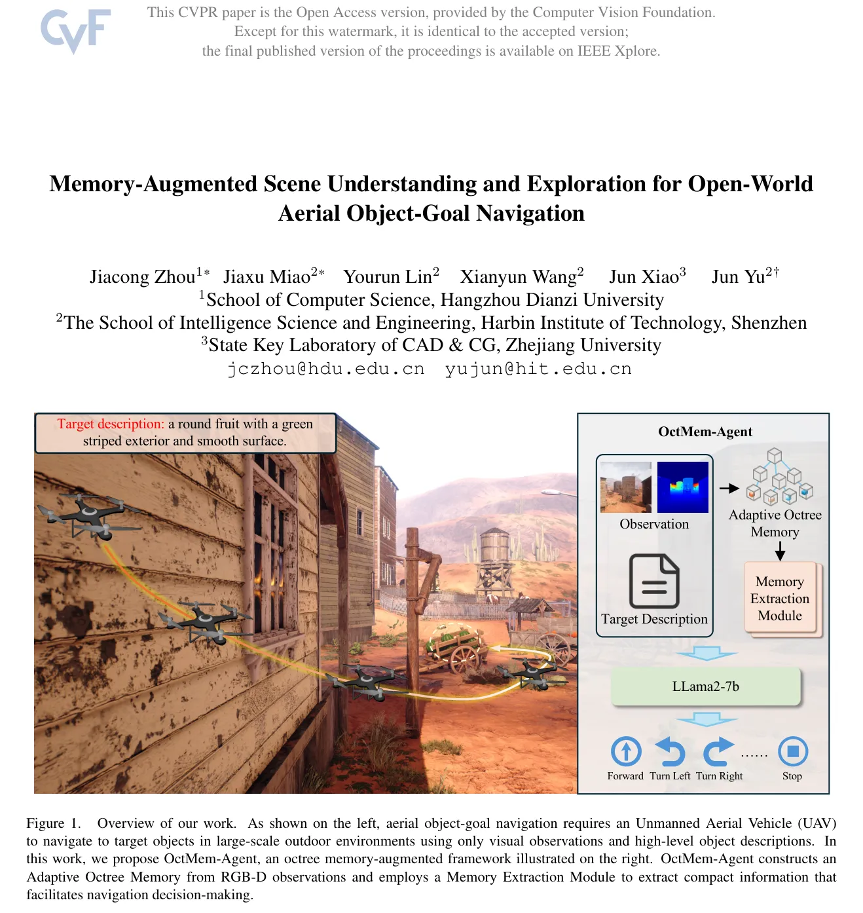
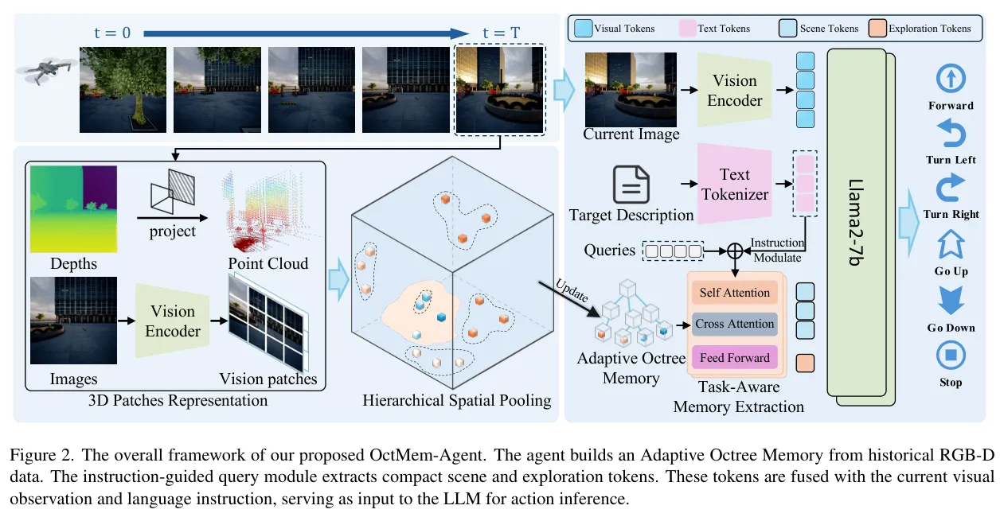
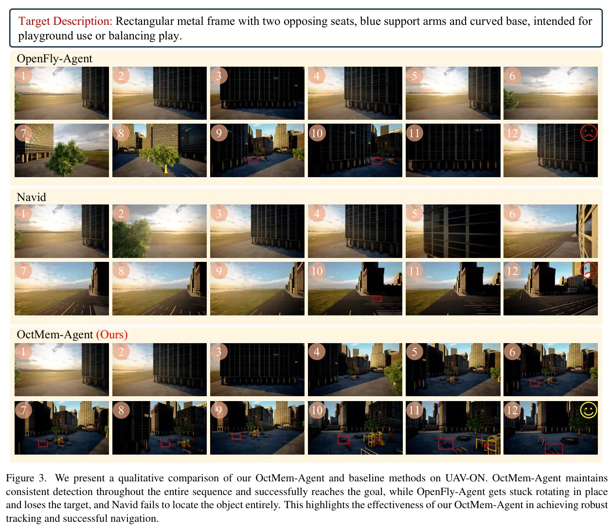

Aerial object-goal navigation (Aerial ObjectNav) requires an Unmanned Aerial Vehicle (UAV) to navigate to target objects in large-scale outdoor environments using only visual observations and high-level object descriptions, without detailed step-by-step instructions. Existing approaches rely on local observations or short-term history, lacking comprehensive scene understanding and efficient spatial exploration strategies, which constrains their navigation capability in complex aerial scenarios. To address these challenges, we propose OctMem-Agent, an octree memory-augmented framework for aerial object-goal navigation. Specifically, we introduce an Adaptive Octree Memory that incrementally aggregates RGB-D observations into a hierarchical 3D representation, capturing both explored regions and unexplored frontiers across large-scale aerial environments. We further propose a Instruction-Guided Memory Query module that extracts task-relevant scene and exploration tokens through instruction-modulated queries. By integrating these tokens with visual observations and language instructions, OctoMem-Agent achieves comprehensive scene understanding and effective spatial exploration for target localization. Extensive experiments on the Aerial ObjectNav benchmark UAV-ON demonstrate that our method achieves a significant 7.5\% improvement in success rate over existing methods, validating the effectiveness of our design.
📝 精读笔记
灵魂一句
OctMem-Agent：给无人机的"空中目标导航"(Aerial ObjectNav——只给一句目标物体描述、靠视觉飞到它，无逐步指令)装上一个八叉树(octree)长时空间记忆。把历史 RGB-D 增量聚合成分层 3D 记忆(近处细体素/远处粗体素，同时记下"已探索区"和"未探索 frontier")；再用 FiLM 指令调制的 Q-Former 抽出两类 token——scene token(查近处记忆做目标定位)、exploration token(查远处记忆找未探索前沿)。在 UAV-ON benchmark 上成功率(SR)比现有最好方法高 7.5%。
第 1 句（任务定义）：“Aerial object-goal navigation (Aerial ObjectNav) requires an Unmanned Aerial Vehicle (UAV) to navigate to target objects in large-scale outdoor environments using only visual observations and high-level object descriptions, without detailed step-by-step instructions.” —— 无人机只靠视觉 + 高层目标描述（非逐步指令）去大尺度户外找目标物。
第 2 句（痛点）：“Existing approaches rely on local observations or short-term history, lacking comprehensive scene understanding and effective spatial exploration strategies.” —— 现有方法只靠局部观测 / 短期历史，缺全局场景理解与有效探索。
第 3–4 句（方案）：提出 OctMem-Agent，含两核心件：① “an Adaptive Octree Memory Representation that incrementally aggregates RGB-D observations into a hierarchical 3D representation, capturing both explored regions and unexplored frontiers”；② “a Instruction-Guided Memory Query module that extracts task-relevant scene and exploration tokens through instruction-modulated queries.”
第 5 句（战绩）：在 Aerial ObjectNav benchmark UAV-ON 上 “achieves a significant 7.5% improvement in success rate over existing methods.” 一句话抓 Abstract：用自适应八叉树记忆（近处细 / 远处粗）+ 指令调制查询（scene token 找目标 / explore token 找前沿），把无人机的短视局部导航升级成有长期记忆的全局探索。
应用价值：Aerial ObjectNav “is critical for deploying UAVs in emergency response, search and rescue, and package delivery” —— 这些场景常"环境剧变、无通信、无人监督"，必须自主找目标。
两大痛点（原文）：① 现有方法短视——“AOA generates navigation actions via LLMs using current observations and recent pose history, while OpenFly operates with only the current frame and the previous two frames”，导致 “myopic decisions and redundant exploration”；② 室内场景表示搬不过来——volumetric/semantic maps “cannot be directly applied to aerial scenarios due to drastically larger spatial scales and altitude-dependent viewpoint variations.”
②-b §1 — solution + 三大贡献
solution 概览：Octree memory 三阶段构建——“first projecting 2D visual features into 3D patches with geometric information, then hierarchically aggregating patches using distance-adaptive voxelization that balances fine-grained local details with compact distant representations, and finally integrating … into an octree-based memory structure.” 这套层次表示 “enables effective spatial indexing and scalable memory management across large-scale aerial environments, providing comprehensive scene understanding for long-term navigation.” 再用 Instruction-Guided Query 抽 scene/exploration token，把"全局记忆"和"当前观测 + 语言指令"融合后送 LLM 决策。
Aerial ObjectNav：从室内 ObjectNav（RL / 模仿学习 → MLLM 语义推理 → VLM 零样本泛化）扩展到户外。当前 aerial 方法（AOA / GeoNav）“primarily focus on zero-shot generalization by leveraging VLMs”。本文区别：“builds upon pretrained VLMs and integrates an Adaptive Octree Memory Representation for scene representation and spatial exploration.”
Memory-based VLN（dense vs sparse）：原文把空间记忆分两派。Dense（semantic maps / voxel maps / neural feature fields，借预训练 VLM）“provide fine-grained spatial encoding but incur substantial memory overhead”，且 “memory requirements grow cubically with scene size, making them impractical for outdoor environments”；Sparse（topological graphs / grid maps / hierarchical graph structures）“offer more compact scene encoding through structured abstractions”，但 “their discrete spatial abstractions and hierarchical structures, optimized for indoor object-level scene understanding, do not generalize well to large-scale outdoor scenarios.” 本文八叉树 + 距离自适应体素正是要兼顾二者——dense 的细粒度 + sparse 的紧凑可扩展。
离散动作空间：\(A=\{\)Move Forward, Turn Left, Turn Right, Ascend, Descend, Stop\(\}\)。前进平移 3 units、升降调高 3 m、转向旋转 30 度。终止：执行 Stop 或到最大步数。成功判据：“the navigation is considered successful if the agent is within 20 meters of the destination.”
⑤ §3.2 Adaptive Octree Memory — 3D Patches（式 1）
动机：把 3D 位置信息注入 2D patch，“explicitly capture spatial structure while retaining the semantic information.” 对每个观测 \(O_t\)，vision encoder 抽 patch token 特征 reshape 成 \(X_p\in\mathbb{R}^{h\times w\times d}\)；用相机内外参 + 深度 back-project 得 3D 世界坐标 \(P\in\mathbb{R}^{h\times w\times 3}\)，再经两层 MLP 编成位置嵌入 \(P'\)。融合：
\[ X_{3D} = X_p + P' \] 得到带几何的 3D patches \(X_{3D}\)。
⑥ §3.2 — Hierarchical Spatial Aggregation（式 2/3）
先过滤：原始 3D patches 过密、直接处理 “computationally prohibitive”。作者给了形象例子：“points beyond the agent's effective planning range are spatially irrelevant as they provide limited navigational value (e.g., points beyond 10000 meters are unlikely to be useful when searching for objects within a 100-meter range).” 故移除距当前位置 \((x_t,y_t,z_t)\) 超过阈值 \(d_{max}\) 的点，并同步过滤 \(X_{3D}\)，得 \(\hat P, \hat X_{3D}\)。这一步是把"无关远点"先砍掉，再做后续层次聚合。
距离自适应体素（核心思想）：原文动机句——“precise navigation requires detailed local information while effective exploration demands compact representation of distant space.” 故 “nearby regions with finer-grained voxels to preserve geometric and semantic details, and distant regions with coarser voxels to capture large-scale layout and unexplored frontiers.” 这正是八叉树相对均匀体素的本质优势：远近用不同分辨率，记忆量不随场景立方膨胀。按距离分区间：
增量构建：聚合后的 \(X_{agg}, P_{agg}\) 增量并入全局 octree 记忆 \(M_t\)。原文：“The octree structure enables effective spatial indexing and hierarchical representation of the 3D environment. Each octree cell corresponds to a spatial region and stores the aggregated patch features of points within that region.” \(t=0\) 时按空间占用递归八分建初始 octree，cell 特征初始化 \(m_c^{(0)}=x_i^{(0)}\)。\(t>0\) 更新规则：新点按 3D 坐标匹配 cell——落在已有 cell 则 “cell features are updated by averaging with their associated features”（与历史特征平均，融合新旧观测）；落在未访问区域则新建 cell \(c'\) 初始化 \(m_{c'}^{(t)}=x_j^{(t)}\)。得 \(M_t=\{m_c^{(t)}\mid c\in C_t\}\)，支持 “fast retrieval and update of local representations.” 这套"匹配则平均、未见则新建"的规则让记忆随飞行轨迹持续增长且不重复存储。
两类互补 token：\(Q_{task}\) 分成 ① Scene tokens \(Q_{scene}\in\mathbb{R}^{N_s\times d}\)——attend 边界内体素，聚焦匹配目标描述的语义物体做精确定位；② Exploration tokens \(Q_{explore}\in\mathbb{R}^{N_e\times d}\)——attend 边界外体素，“identifying frontiers between explored and unexplored regions” 引导探索。\(N_s+N_e=N_q\)。
记忆按边界切分（式 5）：取距离阈值 \(d_b\)，
\[ M_{near}=\{m_c^{(t)}\in M_t \mid dis(c)
⑩ §3.4 Action Generation（OpenVLA 集成）
把 \(Q^{(L)}_{scene}, Q^{(L)}_{explore}\) 拼接 + 线性投影到 VLM 隐维得 \(H_{mem}\)；当前 RGB 编码得 \(H_{obs}\)；指令编码得 \(H_{lang}\)。三者按序列维拼成 \(H_{input}=[H_{lang}, H_{obs}, H_{mem}]\) 送入预训练 VLM backbone，生成 action token，最后 action decoder 离散化为 \(a_t\in A\)。整体 “builds upon the OpenVLA framework, adapting it for discrete action prediction.”
⑪ §4.1 实验设置（UAV-ON / 指标 / 实现）
基准 UAV-ON：14 个 Unreal Engine 高保真户外环境，“spanning diverse geographic structures from compact urban parks to expansive mountainous terrains, including villages, towns, cities, forests, and water areas”，1,270 个目标物（大小不一）。10,000 训练 episode（10 env）+ 1,000 测试 episode（10 训练 env + 4 held-out env，含新物体 / 新指令测泛化）。无轨迹标注，用 3D A* 算最短可达路生成训练轨迹，同时训练 OctMem-Agent 与所有基线（公平）。
三指标定义（原文）：SR — “measures whether the agent stops within a threshold distance from the goal object”（\(\tau=20\) m）；OSR — “measures whether the agent has ever come within the success threshold during the episode, regardless of when it executes the Stop action”（衡量探索触达能力）；SPL — “a weighted success rate where each successful episode is weighted by the ratio of the shortest path length to the actual trajectory length”（衡量成功 + 路径效率）。
读 why：Total SR 全场第一。原文：“significantly outperforms CLIP-H by 13.40% in SR and 17.40% in OSR … surpasses AOA-F by 12.20% in SR”；对训练型方法 “achieves 7.50% and 8.00% higher SR than … OpenFly and Navid”（即摘要的 7.5%）。各目标大小（Small/Medium/Large）SR 全部最高。
⑬ §4.2 泛化（Table 2）+ 定性 case
Table 2（seen vs unseen，%）：Seen —— OctMem SR 22.72 / OSR 30.48 / SPL 8.40；Unseen —— SR 17.57 / OSR 28.59 / SPL 5.15。SR/OSR 两设定均超所有基线，证 “effectively captures transferable spatial knowledge and navigation strategies.”
Case Study（Fig.3）：OctMem-Agent 先探索周边、逐步缩小娱乐区范围再精确定位、成功到达（frame 12）；对比 OpenFly-Agent “gets stuck rotating in place（frames 9-10），losing the target”，Navid “fails to locate the object … revealing insufficient exploration capability.” 直观体现"记忆 + 探索"双能力。
Table 4（空间聚合方式）：标准 Voxelization（体素=5 匹配最细粒度）19.10 / 27.50 / 5.70 vs Hierarchical Spatial Aggregation 19.50 / 29.30（+1.80）/ 6.37（+0.67）——层次聚合"近细远粗"提升轨迹质量（OSR/SPL）。Table 5（FiLM 指令调制 IMQ）：w/o IMQ（vanilla learnable queries）18.60 / 27.30 / 5.97 vs full 19.50 / 29.30 / 6.37（+0.9 / +2.0 / +0.4）——证 FiLM 仿射调制对"按目标条件化 query"是关键。
📌 全文一页总结（≥3 takeaway）
① 核心方法论：用 octree 当可扩展的长期空间记忆 + 距离自适应体素化（近处 \(s=5\) 细、远处 \(s=25\) 粗）解决户外大尺度记忆"立方爆炸"，兼顾"局部精导航"与"远处粗探索"。
② 指令调制双 token 是点睛：FiLM 把目标描述注入 query（式4），再用边界阈值 \(d_b\) 把记忆切 near/far（式5），让 scene token 找目标、explore token 找前沿——消融显示这一模块带来最大 OSR 增益（+8.20）。
③ 实证 SOTA：UAV-ON 上 Total SR 19.50%（超 OpenFly +7.5%、Navid +8.0%、CLIP-H +13.4%），各目标大小全第一，seen/unseen 均领先。takeaway：把"全局记忆 + 任务条件化检索"接到预训练 VLA 上，是把短视的空中导航做成"会记、会探索"的有效路线。
⚠️ 局限 & 待深挖（含 [推测]）
① 依赖深度 / 位姿质量（作者明说）：“our adaptive octree memory representation relies on accurate depth estimation or pose and IMU drift, which may degrade in challenging outdoor conditions such as low-light environments, adverse weather, or textureless regions.” 未来用鲁棒深度融合 + 多传感融合改善；② [推测] SPL 绝对值偏低（6.37%）——成功了但路径不够高效，"探索多→绕路"代价仍在；③ [推测] \(d_{max}=500\) 是基于 UAV-ON "目标距起点 <500 m"的统计设定，换更大场景需重调；④ [推测] 仅在 UAV-ON（仿真 Unreal Engine）验证，真实无人机的传感噪声 / 实时性未评测。
🖼 论文原图（本地 PDF 截图，原文 caption 未改写）

Figure 1. Overview of our work. As shown on the left, aerial object-goal navigation requires an Unmanned Aerial Vehicle (UAV) to navigate to target objects in large-scale outdoor environments using only visual observations and high-level object descriptions. In this work, we propose OctMem-Agent, an octree memory-augmented framework illustrated on the right. OctMem-Agent constructs an Adaptive Oct

Figure 2. The overall framework of our proposed OctMem-Agent. The agent builds an Adaptive Octree Memory from historical RGB-D data. The instruction-guided query module extracts compact scene and exploration tokens. These tokens are fused with the current visual observation and language instruction, serving as input to the LLM for action inference.

Figure 3. We present a qualitative comparison of our OctMem-Agent and baseline methods on UAV-ON. OctMem-Agent maintains consistent detection throughout the entire sequence and successfully reaches the goal, while OpenFly-Agent gets stuck rotating in place and loses the target, and Navid fails to locate the object entirely. This highlights the effectiveness of our OctMem-Agent in achieving robust